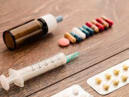
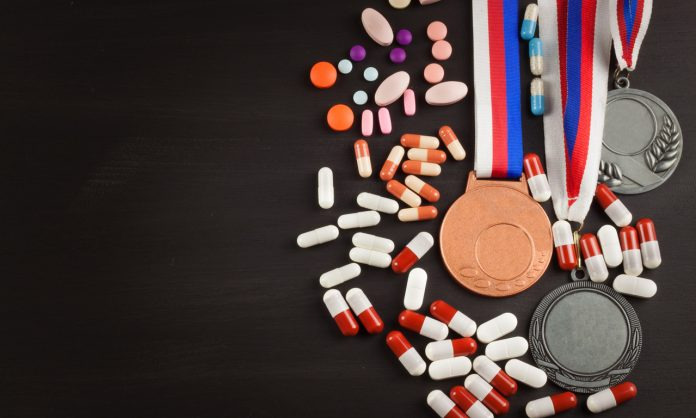
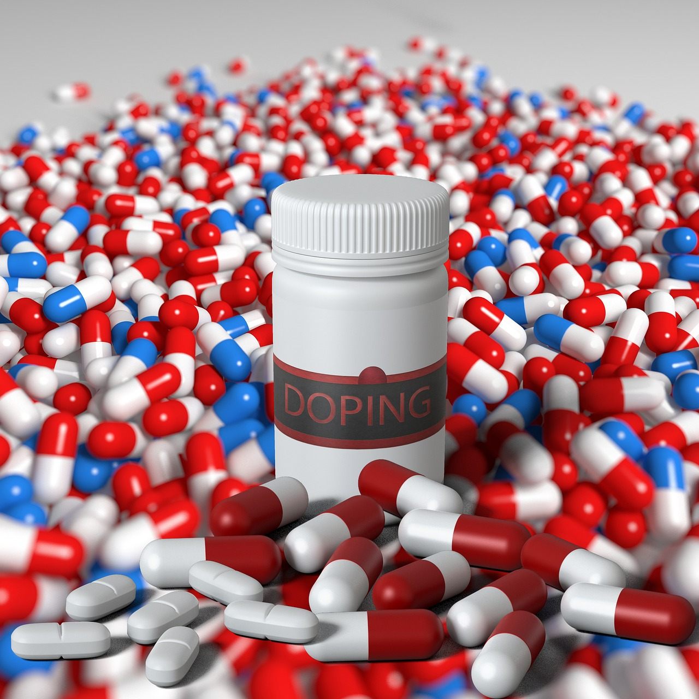

Gruppe 5: Ask, Noemie, Milan og Jonas
Doping - Skader på kropp og sinn
Kva er doping?
Doping er når idrettsutøvere bruker ulovlige stoffer for å forbedre prestasjonene sine. Disse stoffene kan være enten medisiner eller andre kjemiske hjelpemidler som gjør at kroppen kan jobbe hardere eller komme seg raskere etter trening. Doping kan være farlig for helsen, og det kan føre til alvorlige bivirkninger, som problemer med hjertet, leveren eller hormonsystemet. Det kan også føre til psykiske problemer som angst og depresjon.
I sport er doping strengt forbudt fordi det gir en urettferdig fordel. Alle skal ha samme muligheter, og doping ødelegger for det. Det er derfor det finnes strenge regler og tester for å sikre at utøvere ikke bruker dopingmidler.
Noen vanlige stoffer som brukes til doping er anabole steroider, som bygger muskler, eller EPO, som øker mengden røde blodlegemer for bedre utholdenhet. For å beskytte sporten og helsen til utøverne, jobber mange organisasjoner over hele verden for å stoppe doping og sikre rettferdig konkurranse. Doping handler ikke bare om juks, men om å ta vare på helsen og fair play.

Kva er farleg med å bruke dop og steroider?
Steroider ser ut til og være en lett vei for og få større muskler og bli sterkere. Men det kommer med masse konsekvenser også du kan få store kramper og muskel smerte. Du kan også få masse kviser og stygge ar på kroppen. Doping er også veldig farlig og kan gi deg masse helse problemer og det kan også føre til at du dør.
Det er også veldig vanlig og få depresjon av steroider og doping. Folk bruker også steorider for og bli bedre i sporten sinn og kunne vinne imot alle andre idretsudøvere som er imot dem. Det er mangen forskjellige typer steoride. Det er steorider som gjør deg sterkere og raskere bedere utholdenhet osv. Folk bruker ofte steorider fordi de ikkje er fornøyd med hvordan de ser ut. Eq synts det er bortkasta og bruke dop når du heller kan være trygg og trene spise orgentlig isteden for og begynne på steorider. Da slepper du alle bivirkningene.
Kva er side effektene av doping og steroider?
Many athletes want to find a competitive edge to help them go faster, train harder/longer, recover quicDet er også veldig vanlig og få depresjon av steroider og doping. Folk bruker også steorider for og bli bedre i sporten sinn og kunne vinne imot alle andre idretsudøvere som er imot dem. Det er mangen forskjellige typer steoride. Det er steorider som gjør deg sterkere og raskere bedere utholdenhet osv. Folk bruker ofte steorider fordi de ikkje er fornøyd med hvordan de ser ut. Eq synts det er bortkasta og bruke dop når du heller kan være trygg og trene spise orgentlig isteden for og begynne på steorider. Da slepper du alle bivirkningene.ker or be stronger.
That edge can be attained by eating well, good hydration reliable recovery and methods, measured training techniques and a whole lot of really, really hard work.
But some athletes decide to cross that line by trying something more.
The ones that cross that line are risking more than just their reputation and their careers – they're also putting their health at serious risks.
Medications are for people with health issues, not for healthy athletes. These medications are not approved to be used by healthy people, in higher doses nor in combination with other substances.
Taking them when your body doesn’t need them can cause serious damage to your body and destroy your athletic career.
Some banned substances which athletes have also used are not medications. In fact, some banned substances that are marketed as the next big thing are not even approved for human use.
The use of Performance-enhancing Drugs (PEDs) may have long- and- short term impacts on the athlete’s physical and mental health. Depending on the substance, the dosage and the duration of use, some PEDs have been proven to have severe side effects and can cause irreversible damage to your body.

Korleis forebygge at unger og unge mennesker bruker dop
1. Gi belønning og ros
Hjernen til ungdommer er ikkje ferdig utviklet. Blant annet er det skjeivhet i forholdet mellom belønningssenteret av hjernen og den delen av hjernen som står for risikovurdering.
2. Vis varme og kjærlighet.
Det er svært viktig at ungdom har eit miljø dei føler seg trygge i. Eit sted dei føler det er trygt å snakke om både positive og negative ting. Det er viktig at man har varme og gode vaksne rundt seg, som alltid er der. Det er viktig å seie “god natt” og “god morgen” til barna dine sånn at dei veit at du er glad i dei.
Det er viktig å fortelje barnet ditt at du er glad i dei. Eit annet godt råd er å ikkje kjefte vis de kommer heim for seint eller er på virket av rusmidlar. Den praten kan man ta dagen etterpå.
3. Delta i ungdommens liv.
Dette kan du gjøre ved å delta i, eller i det minste vise interesse for, fritidaktivitetene til barnet ditt, bli kjent med vennene til barnet ditt og foreldrene deiras.
4. Finn på hyggelige ting sammen.
Selv om barna kanskje ikke alltid synes det er like kult å henge sammen med mamma eller pappa, så er det mulig å finne noe alle kan gjøre sammen.

5. Snakk med barnet ditt.
Tør å snakke med barnet ditt om narkotika. Ungdommar tenker at doping ikkje er farleg.
Det beste er å ta den diskusjonen i fred og ro, før eventuelle utfordringer oppstår. Men det er svært viktig at foreldrene har faktagrunnlaget på plass før de starter den praten.
Ungdommen er flinke til å søke på internett. Og søker du etter informasjon om at hasj ikkje er farlig, så finner du det. Men det er like enkelt for oss voksne å finne informasjon vi som motargumenter.
Slik kan hjernen bli skadet når du ruser deg.
6. Snakk med de andre foreldrane. Det ofte frykta for å stå alene som får ungdom til å teste narkotika første gang. Jo flere som har tatt den praten med barna sine, jo større er sjansen for at barnet ditt ikkje står alene om å si nei til narkotika.
7. Ha klare regler.
Bli einige om klare rammer for kor det er greit å være, kven det er greit å være saman med og når barna skal komme heim. Samarbeid med andre foreldre om dette.
Hør på podcasten vår!

Kilder:
sportintegrity.gov.au
eurolympic.org
snl.no/doping
snl.no/steroider
nhi.no/aktivitet/doping
nrk.no
Write blue name here
Write blue name here
Write blue name here